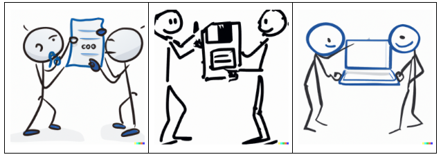
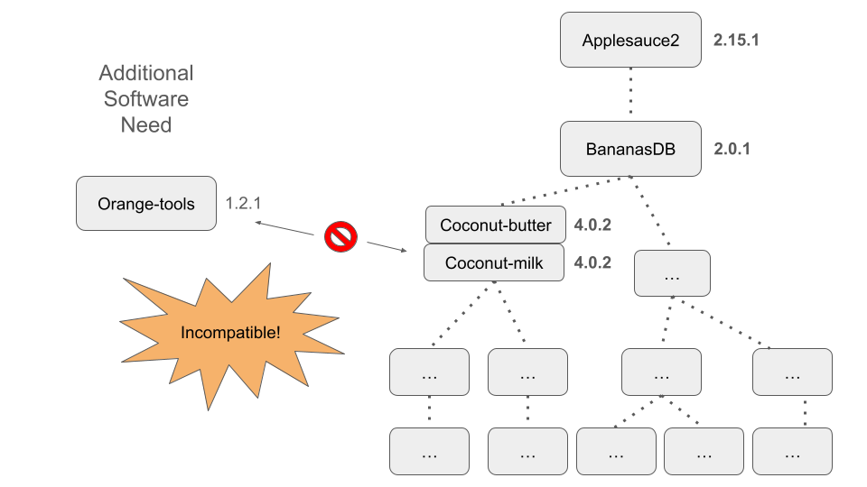
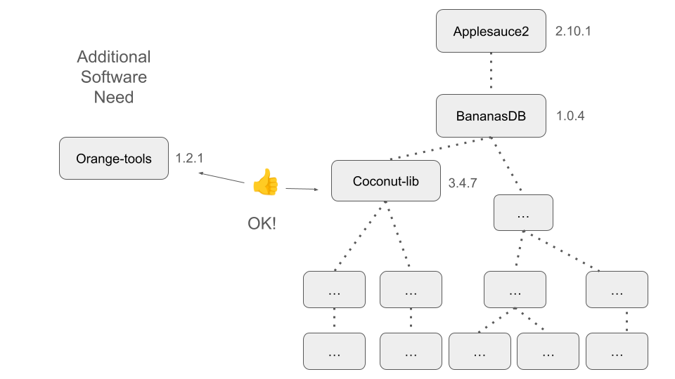
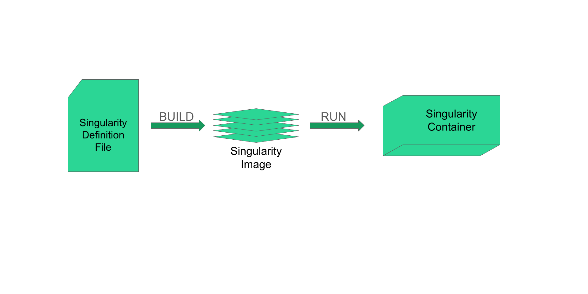
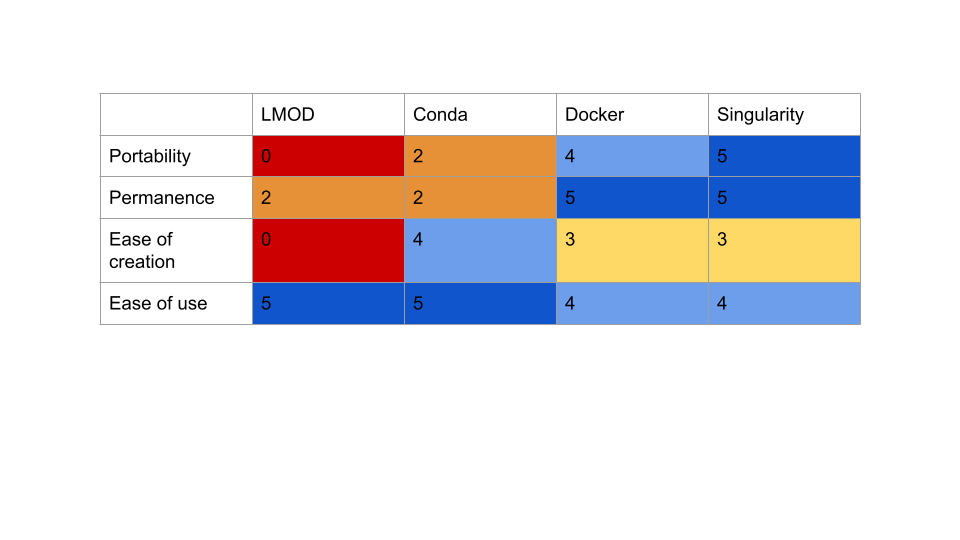

In this module, we will:
- learn about container systems Docker and Singularity
- discuss the what and why of containerization
- compare container solutions to other software management tools that
we’ve discussed
- learn how to utilize publically available Docker or Singularity
containers
- see how to build a new singularity container
Overview of Containerized Software
The software management tools we’ve discussed so far are extremely
helpful and important for reproducible research. However, they do have
some limitations that we’ve mentioned, which we’ll bring into focus and
elaborate in this module as we consider some additional options -
containerized software. We’ll discuss in a moment what we mean by this
term, but to start I’ll mention some of the additional things that
containerized software can grant us:
- Additional portability
- Additional isolation of compute environments
- Additional long-term reliability
The simplest way to think of containers is as if there is a virtual
computer system, running inside of your computer. You can imagine that
the hardware layout of your typical computer can also be recreated
through software, and that is kind of what is happening when we use
software containers. This is of course a gross simplification, but for
now we can think of it in this way.
You may have already heard the term “virtual machine” in the past,
and this is a technology that is related to, but distinct from
containers. We will be discussing containerization software
specifically, and focusing on these because containers are more
efficient, streamlined, and perfectly suited for reproducibility, when
compared to virtual machines. When comparing between these, some things
I’d like to highlight that work highly in favor of containerized
software are:
- The usage of standardized specification files
- e.g. Dockerfiles, Singularity definition files
- allow for superior transparency and reproducibility.
- The layered nature of container architecture
- During creation, the result of each task is formed into its own
layer
- The separate layers are “stacked” one over another until the entire
environment is built
- Allows for high transparency and portability, and streamlines the
build process

To cover some terminology and to give a broad overview of the flow of
using containers, we’ll briefly discuss this figure.
Sharing Software Environments

Let’s revisit the topic of sharing analyses once again. We’ve
discussed how some of you may have experienced friction when trying to
share some analysis code with a collaborator or with a colleague - when
they try to run the analysis on their machine they are unsuccessful.
Maybe they don’t have the required software. Maybe they have some
certain configuration details that are set incorrectly. Or maybe the
software that you’ve given them is actually incompatible with some
software that’s running on their system. In the figure above, we’ve
shown a very simplistic idea for getting around these issues, which is
to just share your entire laptop with your colleague. However, you can
imagine that there are many practical reasons why this is not a very
good solution.
We’ve discussed some solutions that can aid in these sharing tasks,
without having to resort to actually sharing your entire computer with
your colleague. In many ways, these solutions allow us to get past this
friction. Let’s take a moment to think about our experiences with LMOD
modules and conda, and describe their strengths and limitations.
Now we shift our focus back to containers, and how they can offer
some solutions to the limitations of other options. An important aspect
of containers that makes them powerful is that after they’re built
according to specifications, the container is basically unchangeable.
Once again, this is a simplification, but for the most common usages, in
terms of shareability and reproducibility, we can consider it to be
so.
In addition to being stable once created, it is also shareable after
creation. This benefit cannot be overstated. By being able to share the
static environment after it has been created, and to know that it will
remain stable and usable far into the future, we can ensure
reproducibility far into the future as well.
There are several ways that you can share containerized software:
- Sharing the specification files (akin to sharing a conda
recipe)
- Sharing by hosting the images in an accessible repository (Docker
Hub, Quay IO, Biocontainers)
- Sharing the image directly (Singularity Image File)
Environment Isolation

Another important aspect of containers is their relative isolation
from the host system when compared to something like Conda. Remember
that when we are running software within a container, the software
interacts with a completely virtualized version of the hardware system.
By nature of that, that means that there is additional separation
between the software in the container and the software that is outside
of the container. Conda makes no such distinction, but rather uses a
couple of tricks to make it easy to switch between environments.
Static Images are Stable Across Time


We’ll briefly revisit this idea and relate it to the incompatibility
scenario that we described in the previous module.
Not Just Software
Containers can be bundled with more than software - things like
environment variables, configuration files, etc. can be included. For
some tools, this is a critical aspect of providing simple plug-and-play
usability.
Docker
We’ve discussed containerized software as a concept, and now it’s
time to briefly discuss a specific containerization tool - in fact
arguably the most widely used container software today - Docker.

Example of a Dockerfile
FROM centos:centos7
RUN yum -y install wget gdb
COPY foo.yaml /tmp
RUN wget -P /tmp "https://download.example.com/example-installer-3.2.1.el7.x86_64.rpm" && \
rpm -i /tmp/example-installer-3.2.1.el7.x86_64.rpm && \
rm /tmp/example-installer-3.2.1.el7.x86_64.rpm
ENV PATH ${PATH}:/opt/foo/bin
Singularity

Example of a Singularity definition file:
BootStrap: debootstrap
OSVersion: stable
MirrorURL: http://ftp.us.debian.org/debian/
%runscript
echo "This is what happens when you run the container..."
%post
echo "Hello from inside the container"
apt-get update
apt-get -y install fortune cowsay lolcat
%environment
export PATH=$PATH:/usr/games
Some Quick Notes on Singularity
- It is a purpose-built containerization software for an HPC
system
- Singularity can also run Docker containers
- We have several repositories at our fingertips
Exercise - srun, singularity shell, Filter
and Index a BAM
Following along with the instructor, we’ll launch an interactive job
with srun. Once we’ve entered the running job, we will use
singularity with an existing samtools docker image and launch a
‘singularity shell’. With the samtools software now available, we’ll
filter and index sample_A.
After we complete this, we’ll delete the filtered & indexed BAM
file, to start fresh for our SBATCH exercises.
srun, singularity shell, Filter and Index BAM
- Solution
srun --pty --job-name=${USER}_singularity_filter_and_index --account=bioinf_wkshp_class --partition standard --mem=2000 --cpus-per-task=2 --time=00:20:00 /bin/bash
mkdir filter_viz_singularity
module load singularity
singularity shell docker://quay.io/biocontainers/samtools:1.20--h50ea8bc_0
samtools view -o filter_viz_singularity/sample_A.chr19.bam input_bams/sample_A.genome.bam 19
We’ll also do a sanity check here:
samtools view filter_viz_singularity/sample_A.chr19.bam | wc -l
As well as index the BAM (bamCoverage will need the index in the next
step)
samtools index filter_viz_singularity/sample_A.chr19.bam
Exercise - SBATCH, singularity exec, Filter and Index a
BAM
Following along with the instructor, we’ll use the nano editor to
create an SBATCH file and use singularity exec to filter
and index our sample_A BAM file. We’ll submit the job with
sbatch and review its log file and output.
Exercise - SBATCH, singularity exec, Filter and Index
all BAMs
Following along with the instructor, we’ll quickly create additional
sbatch files that can use singularity exec to filter and
index the rest our samples. We’ll submit those jobs with
sbatch and review once again.
Exercise - srun, singularity shell, Sanity
Check All Samples
Following along with the instructor, we’ll launch an interactive job
with srun. Once we’ve entered the running job, we’ll use
singularity shell and quickly perform a sanity check on all
of our filtered BAM files, counting the entries in each file.
Exercise - srun, singularity exec, Create
a Bigwig
Following along with the instructor, we’ll launch an interactive job
with srun. Once we’ve entered the running job, we’ll use
singularity with an existing deeptools docker image and launch a
‘singularity shell’. With the bamCoverage command now
available, we’ll create a Bigwig for sample_A.
After we complete this, we’ll delete the newly created Bigwig file,
so that we can start fresh on our SBATCH exercises.
srun, singularity exec, Create a Bigwig -
Solution
srun --pty --job-name=${USER}_singularity_create_bigwig --account=bioinf_wkshp_class --partition standard --mem=2000 --cpus-per-task=2 --time=00:30:00 /bin/bash
module list
module load singularity
singularity exec docker://quay.io/biocontainers/deeptools:3.5.5--pyhdfd78af_0 bamCoverage -b filter_viz_singularity/sample_A.chr19.bam -o filter_viz_singularity/sample_A.chr19.bigwig
Exercise - SBATCH, Singularity, Create Bigwigs for All BAMs
In the same pattern as we’ve established for our filtering task,
we’ll with a single sample, sample_A and craft an SBATCH file to create
a Bigwig file for that one sample before moving on to others.
Demonstration - Remote Build of a Singularity Image
So far we’ve only demonstrated uses where we use existing docker or
singularity images. While we’ve shown that this is powerful and easy to
use, we aren’t taking full advantage of singularity’s capabilities
without building new images.
This topic is outside the scope of this workshop, but we want to
demonstrate that it is possible to build singularity containers. It’s
not quite straightforward to do so on Great Lakes, but with a little bit
of extra setup it is possible to use a remote builder, which we’ll
demonstrate.
For more information about the remote build process, see the
documentation here:
Link
to documentation on remote builds
Demo Remote Build - Solution
We’ll create a singularity definition file called
cowsay.def
nano cowsay.def
Contents of cowsay.def are shown in the singularity
definition file shown in the above lesson.
Note, to use the remote builder with the --remote flag,
you must follow the instructions on remote builds above - create an
account and generate a token online, then use
singularity remote login.
singularity build --remote cowsay.sif cowsay.def
After this, we have a singularity image file, cowsay.sif
that we can use with singularity shell cowsay.sif or
singularity exec cowsay.sif cowsay Mooo
Review of LMOD, Conda, Docker, and Singularity

In choosing any tool, we must consider the inherent trade-offs
between simplicity, portability, and durability.
LS0tCnRpdGxlOiAiQ29udGFpbmVycyAtIERvY2tlciBhbmQgU2luZ3VsYXJpdHkiCmF1dGhvcjogIlVNIEJpb2luZm9ybWF0aWNzIENvcmUiCm91dHB1dDoKICAgICAgICBodG1sX2RvY3VtZW50OgogICAgICAgICAgICBpbmNsdWRlczoKICAgICAgICAgICAgICAgIGluX2hlYWRlcjogaGVhZGVyLmh0bWwKICAgICAgICAgICAgdGhlbWU6IHBhcGVyCiAgICAgICAgICAgIG51bWJlcl9zZWN0aW9uczogZmFsc2UKICAgICAgICAgICAgZmlnX2NhcHRpb246IHRydWUKICAgICAgICAgICAgbWFya2Rvd246IEdGTQogICAgICAgICAgICBjb2RlX2Rvd25sb2FkOiB0cnVlCi0tLQo8c3R5bGUgdHlwZT0idGV4dC9jc3MiPgpib2R5eyAvKiBOb3JtYWwgICovCiAgICAgIGZvbnQtc2l6ZTogMTRwdDsKICB9CnByZSB7CiAgZm9udC1zaXplOiAxMnB0Cn0KPC9zdHlsZT4KCkluIHRoaXMgbW9kdWxlLCB3ZSB3aWxsOgoKKiBsZWFybiBhYm91dCBjb250YWluZXIgc3lzdGVtcyBEb2NrZXIgYW5kIFNpbmd1bGFyaXR5CiogZGlzY3VzcyB0aGUgd2hhdCBhbmQgd2h5IG9mIGNvbnRhaW5lcml6YXRpb24KKiBjb21wYXJlIGNvbnRhaW5lciBzb2x1dGlvbnMgdG8gb3RoZXIgc29mdHdhcmUgbWFuYWdlbWVudCB0b29scyB0aGF0IHdlJ3ZlIGRpc2N1c3NlZAoqIGxlYXJuIGhvdyB0byB1dGlsaXplIHB1YmxpY2FsbHkgYXZhaWxhYmxlIERvY2tlciBvciBTaW5ndWxhcml0eSBjb250YWluZXJzCiogc2VlIGhvdyB0byBidWlsZCBhIG5ldyBzaW5ndWxhcml0eSBjb250YWluZXIKCiMjIENvbW1vbmFsaXRpZXMgQmV0d2VlbiBTb2Z0d2FyZSBNYW5hZ2VtZW50IFRvb2xzCgohW10oaW1hZ2VzL01vZHVsZTA1X3NvZnR3YXJlX21hbmFnZW1lbnRfY29tbW9uYWxpdGllcy5wbmcpCgojIyBPdmVydmlldyBvZiBDb250YWluZXJpemVkIFNvZnR3YXJlCgpUaGUgc29mdHdhcmUgbWFuYWdlbWVudCB0b29scyB3ZSd2ZSBkaXNjdXNzZWQgc28gZmFyIGFyZSBleHRyZW1lbHkgaGVscGZ1bCBhbmQgaW1wb3J0YW50IGZvciByZXByb2R1Y2libGUgcmVzZWFyY2guIEhvd2V2ZXIsIHRoZXkgZG8gaGF2ZSBzb21lIGxpbWl0YXRpb25zIHRoYXQgd2UndmUgbWVudGlvbmVkLCB3aGljaCB3ZSdsbCBicmluZyBpbnRvIGZvY3VzIGFuZCBlbGFib3JhdGUgaW4gdGhpcyBtb2R1bGUgYXMgd2UgY29uc2lkZXIgc29tZSBhZGRpdGlvbmFsIG9wdGlvbnMgLSBjb250YWluZXJpemVkIHNvZnR3YXJlLiBXZSdsbCBkaXNjdXNzIGluIGEgbW9tZW50IHdoYXQgd2UgbWVhbiBieSB0aGlzIHRlcm0sIGJ1dCB0byBzdGFydCBJJ2xsIG1lbnRpb24gc29tZSBvZiB0aGUgYWRkaXRpb25hbCB0aGluZ3MgdGhhdCBjb250YWluZXJpemVkIHNvZnR3YXJlIGNhbiBncmFudCB1czoKCi0gQWRkaXRpb25hbCBwb3J0YWJpbGl0eQotIEFkZGl0aW9uYWwgaXNvbGF0aW9uIG9mIGNvbXB1dGUgZW52aXJvbm1lbnRzCi0gQWRkaXRpb25hbCBsb25nLXRlcm0gcmVsaWFiaWxpdHkKCgpUaGUgc2ltcGxlc3Qgd2F5IHRvIHRoaW5rIG9mIGNvbnRhaW5lcnMgaXMgYXMgaWYgdGhlcmUgaXMgYSB2aXJ0dWFsIGNvbXB1dGVyIHN5c3RlbSwgcnVubmluZyBpbnNpZGUgb2YgeW91ciBjb21wdXRlci4gWW91IGNhbiBpbWFnaW5lIHRoYXQgdGhlIGhhcmR3YXJlIGxheW91dCBvZiB5b3VyIHR5cGljYWwgY29tcHV0ZXIgY2FuIGFsc28gYmUgcmVjcmVhdGVkIHRocm91Z2ggc29mdHdhcmUsIGFuZCB0aGF0IGlzIGtpbmQgb2Ygd2hhdCBpcyBoYXBwZW5pbmcgd2hlbiB3ZSB1c2Ugc29mdHdhcmUgY29udGFpbmVycy4gVGhpcyBpcyBvZiBjb3Vyc2UgYSBncm9zcyBzaW1wbGlmaWNhdGlvbiwgYnV0IGZvciBub3cgd2UgY2FuIHRoaW5rIG9mIGl0IGluIHRoaXMgd2F5LgoKPGJyPgo8YnI+CgohW10oaW1hZ2VzL01vZHVsZTA1X2NvbXB1dGVyX2luX2NvbXB1dGVyLnBuZykKCjxicj4KCllvdSBtYXkgaGF2ZSBhbHJlYWR5IGhlYXJkIHRoZSB0ZXJtICJ2aXJ0dWFsIG1hY2hpbmUiIGluIHRoZSBwYXN0LCBhbmQgdGhpcyBpcyBhIHRlY2hub2xvZ3kgdGhhdCBpcyByZWxhdGVkIHRvLCBidXQgZGlzdGluY3QgZnJvbSBjb250YWluZXJzLiBXZSB3aWxsIGJlIGRpc2N1c3NpbmcgY29udGFpbmVyaXphdGlvbiBzb2Z0d2FyZSBzcGVjaWZpY2FsbHksIGFuZCBmb2N1c2luZyBvbiB0aGVzZSBiZWNhdXNlIGNvbnRhaW5lcnMgYXJlIG1vcmUgZWZmaWNpZW50LCBzdHJlYW1saW5lZCwgYW5kIHBlcmZlY3RseSBzdWl0ZWQgZm9yIHJlcHJvZHVjaWJpbGl0eSwgd2hlbiBjb21wYXJlZCB0byB2aXJ0dWFsIG1hY2hpbmVzLiBXaGVuIGNvbXBhcmluZyBiZXR3ZWVuIHRoZXNlLCBzb21lIHRoaW5ncyBJJ2QgbGlrZSB0byBoaWdobGlnaHQgdGhhdCB3b3JrIGhpZ2hseSBpbiBmYXZvciBvZiBjb250YWluZXJpemVkIHNvZnR3YXJlIGFyZToKCi0gVGhlIHVzYWdlIG9mIHN0YW5kYXJkaXplZCBzcGVjaWZpY2F0aW9uIGZpbGVzCiAgLSBlLmcuIERvY2tlcmZpbGVzLCBTaW5ndWxhcml0eSBkZWZpbml0aW9uIGZpbGVzCiAgLSBhbGxvdyBmb3Igc3VwZXJpb3IgdHJhbnNwYXJlbmN5IGFuZCByZXByb2R1Y2liaWxpdHkuCi0gVGhlIGxheWVyZWQgbmF0dXJlIG9mIGNvbnRhaW5lciBhcmNoaXRlY3R1cmUKICAtIER1cmluZyBjcmVhdGlvbiwgdGhlIHJlc3VsdCBvZiBlYWNoIHRhc2sgaXMgZm9ybWVkIGludG8gaXRzIG93biBsYXllcgogIC0gVGhlIHNlcGFyYXRlIGxheWVycyBhcmUgInN0YWNrZWQiIG9uZSBvdmVyIGFub3RoZXIgdW50aWwgdGhlIGVudGlyZSBlbnZpcm9ubWVudCBpcyBidWlsdAogIC0gQWxsb3dzIGZvciBoaWdoIHRyYW5zcGFyZW5jeSBhbmQgcG9ydGFiaWxpdHksIGFuZCBzdHJlYW1saW5lcyB0aGUgYnVpbGQgcHJvY2VzcwoKPGJyPgoKIVtdKGltYWdlcy9Nb2R1bGUwNV9maWxlX2ltYWdlX2NvbnRhaW5lcl9nZW5lcmFsaXplZC5wbmcpCgpUbyBjb3ZlciBzb21lIHRlcm1pbm9sb2d5IGFuZCB0byBnaXZlIGEgYnJvYWQgb3ZlcnZpZXcgb2YgdGhlIGZsb3cgb2YgdXNpbmcgY29udGFpbmVycywgd2UnbGwgYnJpZWZseSBkaXNjdXNzIHRoaXMgZmlndXJlLgoKPGJyPgoKCiMjIyBTaGFyaW5nIFNvZnR3YXJlIEVudmlyb25tZW50cwoKPGJyPgoKIVtdKGltYWdlcy9Nb2R1bGUwNV9zaGFyaW5nX2FuYWx5c2VzLnBuZykKCgpMZXQncyByZXZpc2l0IHRoZSB0b3BpYyBvZiBzaGFyaW5nIGFuYWx5c2VzIG9uY2UgYWdhaW4uIFdlJ3ZlIGRpc2N1c3NlZCBob3cgc29tZSBvZiB5b3UgbWF5IGhhdmUgZXhwZXJpZW5jZWQgZnJpY3Rpb24gd2hlbiB0cnlpbmcgdG8gc2hhcmUgc29tZSBhbmFseXNpcyBjb2RlIHdpdGggYSBjb2xsYWJvcmF0b3Igb3Igd2l0aCBhIGNvbGxlYWd1ZSAtIHdoZW4gdGhleSB0cnkgdG8gcnVuIHRoZSBhbmFseXNpcyBvbiB0aGVpciBtYWNoaW5lIHRoZXkgYXJlIHVuc3VjY2Vzc2Z1bC4gTWF5YmUgdGhleSBkb24ndCBoYXZlIHRoZSByZXF1aXJlZCBzb2Z0d2FyZS4gTWF5YmUgdGhleSBoYXZlIHNvbWUgY2VydGFpbiBjb25maWd1cmF0aW9uIGRldGFpbHMgdGhhdCBhcmUgc2V0IGluY29ycmVjdGx5LiBPciBtYXliZSB0aGUgc29mdHdhcmUgdGhhdCB5b3UndmUgZ2l2ZW4gdGhlbSBpcyBhY3R1YWxseSBpbmNvbXBhdGlibGUgd2l0aCBzb21lIHNvZnR3YXJlIHRoYXQncyBydW5uaW5nIG9uIHRoZWlyIHN5c3RlbS4gSW4gdGhlIGZpZ3VyZSBhYm92ZSwgd2UndmUgc2hvd24gYSB2ZXJ5IHNpbXBsaXN0aWMgaWRlYSBmb3IgZ2V0dGluZyBhcm91bmQgdGhlc2UgaXNzdWVzLCB3aGljaCBpcyB0byBqdXN0IHNoYXJlIHlvdXIgZW50aXJlIGxhcHRvcCB3aXRoIHlvdXIgY29sbGVhZ3VlLiBIb3dldmVyLCB5b3UgY2FuIGltYWdpbmUgdGhhdCB0aGVyZSBhcmUgbWFueSBwcmFjdGljYWwgcmVhc29ucyB3aHkgdGhpcyBpcyBub3QgYSB2ZXJ5IGdvb2Qgc29sdXRpb24uIAoKV2UndmUgZGlzY3Vzc2VkIHNvbWUgc29sdXRpb25zIHRoYXQgY2FuIGFpZCBpbiB0aGVzZSBzaGFyaW5nIHRhc2tzLCB3aXRob3V0IGhhdmluZyB0byByZXNvcnQgdG8gYWN0dWFsbHkgc2hhcmluZyB5b3VyIGVudGlyZSBjb21wdXRlciB3aXRoIHlvdXIgY29sbGVhZ3VlLiBJbiBtYW55IHdheXMsIHRoZXNlIHNvbHV0aW9ucyBhbGxvdyB1cyB0byBnZXQgcGFzdCB0aGlzIGZyaWN0aW9uLiBMZXQncyB0YWtlIGEgbW9tZW50IHRvIHRoaW5rIGFib3V0IG91ciBleHBlcmllbmNlcyB3aXRoIExNT0QgbW9kdWxlcyBhbmQgY29uZGEsIGFuZCBkZXNjcmliZSB0aGVpciBzdHJlbmd0aHMgYW5kIGxpbWl0YXRpb25zLgoKPCEtLSBMSVZFX05PVEU6IEhpZ2hsaWdodCB0aGUgbGltaXRhdGlvbiBvZiBjb25kYSAtIHdoaWxlIHdlIGNhbiBzaGFyZSByZWNpcGVzLCB3ZSBjYW4ndCByZWFsbHkgc2hhcmUgdGhlIGJ1aWx0IGVudmlyb25tZW50LiBSZWxhdGUgdG8gc3RhbGUgbGlua3Mgb24gdGhlIGludGVybmV0IC0gaXQncyBub3QgZ3VhcmFudGVlZCB0byBzdGF5IGludGFjdCBmb3JldmVyISAtLT4KCjxicj4KCk5vdyB3ZSBzaGlmdCBvdXIgZm9jdXMgYmFjayB0byBjb250YWluZXJzLCBhbmQgaG93IHRoZXkgY2FuIG9mZmVyIHNvbWUgc29sdXRpb25zIHRvIHRoZSBsaW1pdGF0aW9ucyBvZiBvdGhlciBvcHRpb25zLiBBbiBpbXBvcnRhbnQgYXNwZWN0IG9mIGNvbnRhaW5lcnMgdGhhdCBtYWtlcyB0aGVtIHBvd2VyZnVsIGlzIHRoYXQgYWZ0ZXIgdGhleSdyZSBidWlsdCBhY2NvcmRpbmcgdG8gc3BlY2lmaWNhdGlvbnMsIHRoZSBjb250YWluZXIgaXMgYmFzaWNhbGx5IHVuY2hhbmdlYWJsZS4gT25jZSBhZ2FpbiwgdGhpcyBpcyBhIHNpbXBsaWZpY2F0aW9uLCBidXQgZm9yIHRoZSBtb3N0IGNvbW1vbiB1c2FnZXMsIGluIHRlcm1zIG9mIHNoYXJlYWJpbGl0eSBhbmQgcmVwcm9kdWNpYmlsaXR5LCB3ZSBjYW4gY29uc2lkZXIgaXQgdG8gYmUgc28uCgpJbiBhZGRpdGlvbiB0byBiZWluZyBzdGFibGUgb25jZSBjcmVhdGVkLCBpdCBpcyBhbHNvIHNoYXJlYWJsZSBhZnRlciBjcmVhdGlvbi4gVGhpcyBiZW5lZml0IGNhbm5vdCBiZSBvdmVyc3RhdGVkLiBCeSBiZWluZyBhYmxlIHRvIHNoYXJlIHRoZSBzdGF0aWMgZW52aXJvbm1lbnQgYWZ0ZXIgaXQgaGFzIGJlZW4gY3JlYXRlZCwgYW5kIHRvIGtub3cgdGhhdCBpdCB3aWxsIHJlbWFpbiBzdGFibGUgYW5kIHVzYWJsZSBmYXIgaW50byB0aGUgZnV0dXJlLCB3ZSBjYW4gZW5zdXJlIHJlcHJvZHVjaWJpbGl0eSBmYXIgaW50byB0aGUgZnV0dXJlIGFzIHdlbGwuCgpUaGVyZSBhcmUgc2V2ZXJhbCB3YXlzIHRoYXQgeW91IGNhbiBzaGFyZSBjb250YWluZXJpemVkIHNvZnR3YXJlOgoKLSBTaGFyaW5nIHRoZSBzcGVjaWZpY2F0aW9uIGZpbGVzIChha2luIHRvIHNoYXJpbmcgYSBjb25kYSByZWNpcGUpCi0gU2hhcmluZyBieSBob3N0aW5nIHRoZSBpbWFnZXMgaW4gYW4gYWNjZXNzaWJsZSByZXBvc2l0b3J5IChEb2NrZXIgSHViLCBRdWF5IElPLCBCaW9jb250YWluZXJzKQotIFNoYXJpbmcgdGhlIGltYWdlIGRpcmVjdGx5IChTaW5ndWxhcml0eSBJbWFnZSBGaWxlKQoKPGJyPgoKIyMjIEVudmlyb25tZW50IElzb2xhdGlvbgoKIVtdKGltYWdlcy9Nb2R1bGUwNV9jb250YWluZXJfaXNvbGF0aW9uLnBuZykKCkFub3RoZXIgaW1wb3J0YW50IGFzcGVjdCBvZiBjb250YWluZXJzIGlzIHRoZWlyIHJlbGF0aXZlIGlzb2xhdGlvbiBmcm9tIHRoZSBob3N0IHN5c3RlbSB3aGVuIGNvbXBhcmVkIHRvIHNvbWV0aGluZyBsaWtlIENvbmRhLiBSZW1lbWJlciB0aGF0IHdoZW4gd2UgYXJlIHJ1bm5pbmcgc29mdHdhcmUgd2l0aGluIGEgY29udGFpbmVyLCB0aGUgc29mdHdhcmUgaW50ZXJhY3RzIHdpdGggYSBjb21wbGV0ZWx5IHZpcnR1YWxpemVkIHZlcnNpb24gb2YgdGhlIGhhcmR3YXJlIHN5c3RlbS4gQnkgbmF0dXJlIG9mIHRoYXQsIHRoYXQgbWVhbnMgdGhhdCB0aGVyZSBpcyBhZGRpdGlvbmFsIHNlcGFyYXRpb24gYmV0d2VlbiB0aGUgc29mdHdhcmUgaW4gdGhlIGNvbnRhaW5lciBhbmQgdGhlIHNvZnR3YXJlIHRoYXQgaXMgb3V0c2lkZSBvZiB0aGUgY29udGFpbmVyLiBDb25kYSBtYWtlcyBubyBzdWNoIGRpc3RpbmN0aW9uLCBidXQgcmF0aGVyIHVzZXMgYSBjb3VwbGUgb2YgdHJpY2tzIHRvIG1ha2UgaXQgZWFzeSB0byBzd2l0Y2ggYmV0d2VlbiBlbnZpcm9ubWVudHMuIAoKCjxicj4KCiMjIyBTdGF0aWMgSW1hZ2VzIGFyZSBTdGFibGUgQWNyb3NzIFRpbWUKCiFbXShpbWFnZXMvTW9kdWxlMDRfZGVwZW5kZW5jaWVzX2luY29tcGF0aWJpbGl0eS5wbmcpCgo8YnI+Cjxicj4KPGJyPgoKIVtdKGltYWdlcy9Nb2R1bGUwNV9kZXBlbmRlbmNpZXNfb3Zlcl90aW1lLnBuZykKCldlJ2xsIGJyaWVmbHkgcmV2aXNpdCB0aGlzIGlkZWEgYW5kIHJlbGF0ZSBpdCB0byB0aGUgaW5jb21wYXRpYmlsaXR5IHNjZW5hcmlvIHRoYXQgd2UgZGVzY3JpYmVkIGluIHRoZSBwcmV2aW91cyBtb2R1bGUuCgo8YnI+CgojIyMgTm90IEp1c3QgU29mdHdhcmUKCkNvbnRhaW5lcnMgY2FuIGJlIGJ1bmRsZWQgd2l0aCBtb3JlIHRoYW4gc29mdHdhcmUgLSB0aGluZ3MgbGlrZSBlbnZpcm9ubWVudCB2YXJpYWJsZXMsIGNvbmZpZ3VyYXRpb24gZmlsZXMsIGV0Yy4gY2FuIGJlIGluY2x1ZGVkLiBGb3Igc29tZSB0b29scywgdGhpcyBpcyBhIGNyaXRpY2FsIGFzcGVjdCBvZiBwcm92aWRpbmcgc2ltcGxlIHBsdWctYW5kLXBsYXkgdXNhYmlsaXR5LgoKPGJyPgoKIyMgRG9ja2VyCgpXZSd2ZSBkaXNjdXNzZWQgY29udGFpbmVyaXplZCBzb2Z0d2FyZSBhcyBhIGNvbmNlcHQsIGFuZCBub3cgaXQncyB0aW1lIHRvIGJyaWVmbHkgZGlzY3VzcyBhIHNwZWNpZmljIGNvbnRhaW5lcml6YXRpb24gdG9vbCAtIGluIGZhY3QgYXJndWFibHkgdGhlIG1vc3Qgd2lkZWx5IHVzZWQgY29udGFpbmVyIHNvZnR3YXJlIHRvZGF5IC0gRG9ja2VyLgoKIVtdKGltYWdlcy9Nb2R1bGUwNV9maWxlX2ltYWdlX2NvbnRhaW5lcl9kb2NrZXIucG5nKQoKPCEtLSBMSVZFX05PVEU6IEVtcGhhc2l6ZSB0aGF0IGltYWdlcyBhcmUgc2hhcmVhYmxlIG9uIERvY2tlckh1YiwgYW5kIHRoZW4gZXhlY3V0YWJsZS4gQWxzbyB3YW50IHRvIGhpZ2hsaWdodCB0aGF0IHdlIGNhbid0IGRpcmVjdGx5IHVzZSBEb2NrZXIgb24gR3JlYXQgTGFrZXMsIGJ1dCB3ZSBjYW4gc3RpbGwgdXNlIGRvY2tlciBpbWFnZXMgd2l0aCB0aGUgbmV4dCBzb2Z0d2FyZSB3ZSdsbCBkaXNjdXNzLCBzaW5ndWxhcml0eSAtLT4KCjwhLS0gTElWRV9OT1RFOiBFbXBoYXNpemUgdGhhdCBEb2NrZXIgYXNzdW1lcyB0aGF0IHlvdSBoYXZlIGZ1bGwgY29udHJvbCBvdmVyIGEgc3lzdGVtLiBPbiBhbiBIUEMsIHRoaXMgaXMgbm90IHRoZSBjYXNlLCB0aGVyZSBhcmUgc3lzdGVtcyBpbiBwbGFjZSB0aGF0IGtlZXAgdXMgZnJvbSBzdGVwcGluZyBvbiBlYWNoLW90aGVycyB0b2VzLiAtLT4KCjxicj4KCjxkZXRhaWxzPgo8c3VtbWFyeT5FeGFtcGxlIG9mIGEgRG9ja2VyZmlsZTwvc3VtbWFyeT4KCmBgYApGUk9NIGNlbnRvczpjZW50b3M3CgpSVU4geXVtIC15IGluc3RhbGwgd2dldCBnZGIKCkNPUFkgZm9vLnlhbWwgL3RtcAoKUlVOIHdnZXQgLVAgL3RtcCAiaHR0cHM6Ly9kb3dubG9hZC5leGFtcGxlLmNvbS9leGFtcGxlLWluc3RhbGxlci0zLjIuMS5lbDcueDg2XzY0LnJwbSIgJiYgXAogICAgcnBtIC1pIC90bXAvZXhhbXBsZS1pbnN0YWxsZXItMy4yLjEuZWw3Lng4Nl82NC5ycG0gJiYgXAogICAgcm0gL3RtcC9leGFtcGxlLWluc3RhbGxlci0zLjIuMS5lbDcueDg2XzY0LnJwbQoKRU5WIFBBVEggJHtQQVRIfTovb3B0L2Zvby9iaW4KYGBgCgo8L2RldGFpbHM+Cgo8YnI+CgojIyBTaW5ndWxhcml0eQoKIVtdKGltYWdlcy9Nb2R1bGUwNV9maWxlX2ltYWdlX2NvbnRhaW5lcl9zaW5ndWxhcml0eS5wbmcpCgpFeGFtcGxlIG9mIGEgU2luZ3VsYXJpdHkgZGVmaW5pdGlvbiBmaWxlOgoKYGBgCkJvb3RTdHJhcDogZGVib290c3RyYXAKT1NWZXJzaW9uOiBzdGFibGUKTWlycm9yVVJMOiBodHRwOi8vZnRwLnVzLmRlYmlhbi5vcmcvZGViaWFuLwoKJXJ1bnNjcmlwdAogICAgZWNobyAiVGhpcyBpcyB3aGF0IGhhcHBlbnMgd2hlbiB5b3UgcnVuIHRoZSBjb250YWluZXIuLi4iCgolcG9zdAogICAgZWNobyAiSGVsbG8gZnJvbSBpbnNpZGUgdGhlIGNvbnRhaW5lciIKICAgIGFwdC1nZXQgdXBkYXRlCiAgICBhcHQtZ2V0IC15IGluc3RhbGwgZm9ydHVuZSBjb3dzYXkgbG9sY2F0CgolZW52aXJvbm1lbnQKICAgIGV4cG9ydCBQQVRIPSRQQVRIOi91c3IvZ2FtZXMKYGBgCgojIyMgU29tZSBRdWljayBOb3RlcyBvbiBTaW5ndWxhcml0eQoKLSBJdCBpcyBhIHB1cnBvc2UtYnVpbHQgY29udGFpbmVyaXphdGlvbiBzb2Z0d2FyZSBmb3IgYW4gSFBDIHN5c3RlbQotIFNpbmd1bGFyaXR5IGNhbiBhbHNvIHJ1biBEb2NrZXIgY29udGFpbmVycwotIFdlIGhhdmUgc2V2ZXJhbCByZXBvc2l0b3JpZXMgYXQgb3VyIGZpbmdlcnRpcHMKICAtIERvY2tlciBIdWIgLSBodHRwczovL2h1Yi5kb2NrZXIuY29tCiAgLSBCaW9jb250YWluZXJzIC0gaHR0cHM6Ly9iaW9jb250YWluZXJzLnBybwogIC0gUXVheSBJTyAtIGh0dHBzOi8vcXVheS5pbwogIC0gR2FsYXh5IFByb2plY3QgLSBodHRwczovL2RlcG90LmdhbGF4eXByb2plY3Qub3JnL3Npbmd1bGFyaXR5LwoKCjwhLS0gTElWRV9OT1RFOiBEbyBhIGRlbW9uc3RyYXRpb24gb2YgZ29pbmcgdG8gUXVheS5pbyBhbmQgZ2V0dGluZyBzYW10b29scyBhbmQgZGVlcHRvb2xzIGltYWdlcyAtLT4KCiMjIEV4ZXJjaXNlIC0gYHNydW5gLCBgc2luZ3VsYXJpdHkgc2hlbGxgLCBGaWx0ZXIgYW5kIEluZGV4IGEgQkFNCgo8IS0tIExJVkVfTk9URTogQWxzbyBkbyBzYW5pdHkgY2hlY2sgLS0+CgpGb2xsb3dpbmcgYWxvbmcgd2l0aCB0aGUgaW5zdHJ1Y3Rvciwgd2UnbGwgbGF1bmNoIGFuIGludGVyYWN0aXZlIGpvYiB3aXRoIGBzcnVuYC4gT25jZSB3ZSd2ZSBlbnRlcmVkIHRoZSBydW5uaW5nIGpvYiwgd2Ugd2lsbCB1c2Ugc2luZ3VsYXJpdHkgd2l0aCBhbiBleGlzdGluZyBzYW10b29scyBkb2NrZXIgaW1hZ2UgYW5kIGxhdW5jaCBhICdzaW5ndWxhcml0eSBzaGVsbCcuIFdpdGggdGhlIHNhbXRvb2xzIHNvZnR3YXJlIG5vdyBhdmFpbGFibGUsIHdlJ2xsIGZpbHRlciBhbmQgaW5kZXggc2FtcGxlX0EuCgpBZnRlciB3ZSBjb21wbGV0ZSB0aGlzLCB3ZSdsbCBkZWxldGUgdGhlIGZpbHRlcmVkICYgaW5kZXhlZCBCQU0gZmlsZSwgdG8gc3RhcnQgZnJlc2ggZm9yIG91ciBTQkFUQ0ggZXhlcmNpc2VzLgoKPGRldGFpbHM+CjxzdW1tYXJ5PmBzcnVuYCwgYHNpbmd1bGFyaXR5IHNoZWxsYCwgRmlsdGVyIGFuZCBJbmRleCBCQU0gLSBTb2x1dGlvbjwvc3VtbWFyeT4KCmBzcnVuIC0tcHR5IC0tam9iLW5hbWU9JHtVU0VSfV9zaW5ndWxhcml0eV9maWx0ZXJfYW5kX2luZGV4IC0tYWNjb3VudD1iaW9pbmZfd2tzaHBfY2xhc3MgLS1wYXJ0aXRpb24gc3RhbmRhcmQgLS1tZW09MjAwMCAtLWNwdXMtcGVyLXRhc2s9MiAtLXRpbWU9MDA6MjA6MDAgL2Jpbi9iYXNoYAoKYG1rZGlyIGZpbHRlcl92aXpfc2luZ3VsYXJpdHlgCgpgbW9kdWxlIGxvYWQgc2luZ3VsYXJpdHlgCgpgc2luZ3VsYXJpdHkgc2hlbGwgZG9ja2VyOi8vcXVheS5pby9iaW9jb250YWluZXJzL3NhbXRvb2xzOjEuMjAtLWg1MGVhOGJjXzBgCgpgc2FtdG9vbHMgdmlldyAtbyBmaWx0ZXJfdml6X3Npbmd1bGFyaXR5L3NhbXBsZV9BLmNocjE5LmJhbSBpbnB1dF9iYW1zL3NhbXBsZV9BLmdlbm9tZS5iYW0gMTlgCgpXZSdsbCBhbHNvIGRvIGEgc2FuaXR5IGNoZWNrIGhlcmU6Cgpgc2FtdG9vbHMgdmlldyBmaWx0ZXJfdml6X3Npbmd1bGFyaXR5L3NhbXBsZV9BLmNocjE5LmJhbSB8IHdjIC1sYAoKQXMgd2VsbCBhcyBpbmRleCB0aGUgQkFNIChiYW1Db3ZlcmFnZSB3aWxsIG5lZWQgdGhlIGluZGV4IGluIHRoZSBuZXh0IHN0ZXApCgpgc2FtdG9vbHMgaW5kZXggZmlsdGVyX3Zpel9zaW5ndWxhcml0eS9zYW1wbGVfQS5jaHIxOS5iYW1gCgo8L2RldGFpbHM+Cgo8YnI+Cgo8IS0tIExJVkVfTk9URTogU2tpcCBzZXZlcmFsIGV4ZXJjaXNlcyAtLT4KCiMjIEV4ZXJjaXNlIC0gU0JBVENILCBgc2luZ3VsYXJpdHkgZXhlY2AsIEZpbHRlciBhbmQgSW5kZXggYSBCQU0KCkZvbGxvd2luZyBhbG9uZyB3aXRoIHRoZSBpbnN0cnVjdG9yLCB3ZSdsbCB1c2UgdGhlIG5hbm8gZWRpdG9yIHRvIGNyZWF0ZSBhbiBTQkFUQ0ggZmlsZSBhbmQgdXNlIGBzaW5ndWxhcml0eSBleGVjYCB0byBmaWx0ZXIgYW5kIGluZGV4IG91ciBzYW1wbGVfQSBCQU0gZmlsZS4gV2UnbGwgc3VibWl0IHRoZSBqb2Igd2l0aCBgc2JhdGNoYCBhbmQgcmV2aWV3IGl0cyBsb2cgZmlsZSBhbmQgb3V0cHV0LgoKPGJyPgoKIyMgRXhlcmNpc2UgLSBTQkFUQ0gsIGBzaW5ndWxhcml0eSBleGVjYCwgRmlsdGVyIGFuZCBJbmRleCBhbGwgQkFNcwoKRm9sbG93aW5nIGFsb25nIHdpdGggdGhlIGluc3RydWN0b3IsIHdlJ2xsIHF1aWNrbHkgY3JlYXRlIGFkZGl0aW9uYWwgc2JhdGNoIGZpbGVzIHRoYXQgY2FuIHVzZSBgc2luZ3VsYXJpdHkgZXhlY2AgdG8gZmlsdGVyIGFuZCBpbmRleCB0aGUgcmVzdCBvdXIgc2FtcGxlcy4gV2UnbGwgc3VibWl0IHRob3NlIGpvYnMgd2l0aCBgc2JhdGNoYCBhbmQgcmV2aWV3IG9uY2UgYWdhaW4uCgo8YnI+CgojIyBFeGVyY2lzZSAtIGBzcnVuYCwgYHNpbmd1bGFyaXR5IHNoZWxsYCwgU2FuaXR5IENoZWNrIEFsbCBTYW1wbGVzCgpGb2xsb3dpbmcgYWxvbmcgd2l0aCB0aGUgaW5zdHJ1Y3Rvciwgd2UnbGwgbGF1bmNoIGFuIGludGVyYWN0aXZlIGpvYiB3aXRoIGBzcnVuYC4gT25jZSB3ZSd2ZSBlbnRlcmVkIHRoZSBydW5uaW5nIGpvYiwgd2UnbGwgdXNlIGBzaW5ndWxhcml0eSBzaGVsbGAgYW5kIHF1aWNrbHkgcGVyZm9ybSBhIHNhbml0eSBjaGVjayBvbiBhbGwgb2Ygb3VyIGZpbHRlcmVkIEJBTSBmaWxlcywgY291bnRpbmcgdGhlIGVudHJpZXMgaW4gZWFjaCBmaWxlLgoKPCEtLSBMSVZFX05PVEU6IHdyaXRlIG91ciBzYW5pdHkgY2hlY2sgY29tbWFuZCB0byBhIGZpbGUgdG8gcmVjb3JkIGl0IGZvciBmdXR1cmUgLS0+Cgo8YnI+CgojIyBFeGVyY2lzZSAtIGBzcnVuYCwgYHNpbmd1bGFyaXR5IGV4ZWNgLCBDcmVhdGUgYSBCaWd3aWcKCjwhLS0gTElWRV9OT1RFOiBXZSdsbCBkZW1vbnN0cmF0ZSBzaW5ndWxhcml0eSBleGVjIGluIHRoaXMgZXhlcmNpc2UgLS0+CgpGb2xsb3dpbmcgYWxvbmcgd2l0aCB0aGUgaW5zdHJ1Y3Rvciwgd2UnbGwgbGF1bmNoIGFuIGludGVyYWN0aXZlIGpvYiB3aXRoIGBzcnVuYC4gT25jZSB3ZSd2ZSBlbnRlcmVkIHRoZSBydW5uaW5nIGpvYiwgd2UnbGwgdXNlIHNpbmd1bGFyaXR5IHdpdGggYW4gZXhpc3RpbmcgZGVlcHRvb2xzIGRvY2tlciBpbWFnZSBhbmQgbGF1bmNoIGEgJ3Npbmd1bGFyaXR5IHNoZWxsJy4gV2l0aCB0aGUgYGJhbUNvdmVyYWdlYCBjb21tYW5kIG5vdyBhdmFpbGFibGUsIHdlJ2xsIGNyZWF0ZSBhIEJpZ3dpZyBmb3Igc2FtcGxlX0EuCgpBZnRlciB3ZSBjb21wbGV0ZSB0aGlzLCB3ZSdsbCBkZWxldGUgdGhlIG5ld2x5IGNyZWF0ZWQgQmlnd2lnIGZpbGUsIHNvIHRoYXQgd2UgY2FuIHN0YXJ0IGZyZXNoIG9uIG91ciBTQkFUQ0ggZXhlcmNpc2VzLgoKPGRldGFpbHM+CjxzdW1tYXJ5PmBzcnVuYCwgYHNpbmd1bGFyaXR5IGV4ZWNgLCBDcmVhdGUgYSBCaWd3aWcgLSBTb2x1dGlvbjwvc3VtbWFyeT4KCmBzcnVuIC0tcHR5IC0tam9iLW5hbWU9JHtVU0VSfV9zaW5ndWxhcml0eV9jcmVhdGVfYmlnd2lnIC0tYWNjb3VudD1iaW9pbmZfd2tzaHBfY2xhc3MgLS1wYXJ0aXRpb24gc3RhbmRhcmQgLS1tZW09MjAwMCAtLWNwdXMtcGVyLXRhc2s9MiAtLXRpbWU9MDA6MzA6MDAgL2Jpbi9iYXNoYAoKYG1vZHVsZSBsaXN0YAoKYG1vZHVsZSBsb2FkIHNpbmd1bGFyaXR5YAoKYHNpbmd1bGFyaXR5IGV4ZWMgZG9ja2VyOi8vcXVheS5pby9iaW9jb250YWluZXJzL2RlZXB0b29sczozLjUuNS0tcHloZGZkNzhhZl8wIGJhbUNvdmVyYWdlIC1iIGZpbHRlcl92aXpfc2luZ3VsYXJpdHkvc2FtcGxlX0EuY2hyMTkuYmFtIC1vIGZpbHRlcl92aXpfc2luZ3VsYXJpdHkvc2FtcGxlX0EuY2hyMTkuYmlnd2lnYAoKPC9kZXRhaWxzPgoKPGJyPgoKPCEtLSBMSVZFX05PVEU6IFNraXAgY3JlYXRlIGFsbCBiaWd3aWdzIGV4ZXJjaXNlIC0tPgoKIyMgRXhlcmNpc2UgLSBTQkFUQ0gsIFNpbmd1bGFyaXR5LCBDcmVhdGUgQmlnd2lncyBmb3IgQWxsIEJBTXMKCkluIHRoZSBzYW1lIHBhdHRlcm4gYXMgd2UndmUgZXN0YWJsaXNoZWQgZm9yIG91ciBmaWx0ZXJpbmcgdGFzaywgd2UnbGwgd2l0aCBhIHNpbmdsZSBzYW1wbGUsIHNhbXBsZV9BIGFuZCBjcmFmdCBhbiBTQkFUQ0ggZmlsZSB0byBjcmVhdGUgYSBCaWd3aWcgZmlsZSBmb3IgdGhhdCBvbmUgc2FtcGxlIGJlZm9yZSBtb3Zpbmcgb24gdG8gb3RoZXJzLgoKPGJyPgoKPCEtLSBMSVZFX05PVEU6IFJlbWVtYmVyIHRvIGhhdmUgdXNlcnMgbW92ZSB0aGVpciBjb25kYSBlbnYgLS0+Cgo8IS0tIExJVkVfTk9URTogVGFrZSB0aW1lIHRvIGRvY3VtZW50IGFuZCB0byB0aWR5IHVwIC0tPgoKCiMjIERlbW9uc3RyYXRpb24gLSBSZW1vdGUgQnVpbGQgb2YgYSBTaW5ndWxhcml0eSBJbWFnZQoKU28gZmFyIHdlJ3ZlIG9ubHkgZGVtb25zdHJhdGVkIHVzZXMgd2hlcmUgd2UgdXNlIGV4aXN0aW5nIGRvY2tlciBvciBzaW5ndWxhcml0eSBpbWFnZXMuIFdoaWxlIHdlJ3ZlIHNob3duIHRoYXQgdGhpcyBpcyBwb3dlcmZ1bCBhbmQgZWFzeSB0byB1c2UsIHdlIGFyZW4ndCB0YWtpbmcgZnVsbCBhZHZhbnRhZ2Ugb2Ygc2luZ3VsYXJpdHkncyBjYXBhYmlsaXRpZXMgd2l0aG91dCBidWlsZGluZyBuZXcgaW1hZ2VzLgoKVGhpcyB0b3BpYyBpcyBvdXRzaWRlIHRoZSBzY29wZSBvZiB0aGlzIHdvcmtzaG9wLCBidXQgd2Ugd2FudCB0byBkZW1vbnN0cmF0ZSB0aGF0IGl0IGlzIHBvc3NpYmxlIHRvIGJ1aWxkIHNpbmd1bGFyaXR5IGNvbnRhaW5lcnMuIEl0J3Mgbm90IHF1aXRlIHN0cmFpZ2h0Zm9yd2FyZCB0byBkbyBzbyBvbiBHcmVhdCBMYWtlcywgYnV0IHdpdGggYSBsaXR0bGUgYml0IG9mIGV4dHJhIHNldHVwIGl0IGlzIHBvc3NpYmxlIHRvIHVzZSBhIHJlbW90ZSBidWlsZGVyLCB3aGljaCB3ZSdsbCBkZW1vbnN0cmF0ZS4KCkZvciBtb3JlIGluZm9ybWF0aW9uIGFib3V0IHRoZSByZW1vdGUgYnVpbGQgcHJvY2Vzcywgc2VlIHRoZSBkb2N1bWVudGF0aW9uIGhlcmU6CgpbTGluayB0byBkb2N1bWVudGF0aW9uIG9uIHJlbW90ZSBidWlsZHNdKGh0dHBzOi8vZG9jcy5zeWxhYnMuaW8vZ3VpZGVzL2xhdGVzdC91c2VyLWd1aWRlL2J1aWxkX2FfY29udGFpbmVyLmh0bWwjcmVtb3RlLWJ1aWxkcykKCjxkZXRhaWxzPgo8c3VtbWFyeT5EZW1vIFJlbW90ZSBCdWlsZCAtIFNvbHV0aW9uPC9zdW1tYXJ5PgoKV2UnbGwgY3JlYXRlIGEgc2luZ3VsYXJpdHkgZGVmaW5pdGlvbiBmaWxlIGNhbGxlZCBgY293c2F5LmRlZmAKCmBuYW5vIGNvd3NheS5kZWZgCgpDb250ZW50cyBvZiBgY293c2F5LmRlZmAgYXJlIHNob3duIGluIHRoZSBzaW5ndWxhcml0eSBkZWZpbml0aW9uIGZpbGUgc2hvd24gaW4gdGhlIGFib3ZlIGxlc3Nvbi4KCk5vdGUsIHRvIHVzZSB0aGUgcmVtb3RlIGJ1aWxkZXIgd2l0aCB0aGUgYC0tcmVtb3RlYCBmbGFnLCB5b3UgbXVzdCBmb2xsb3cgdGhlIGluc3RydWN0aW9ucyBvbiByZW1vdGUgYnVpbGRzIGFib3ZlIC0gY3JlYXRlIGFuIGFjY291bnQgYW5kIGdlbmVyYXRlIGEgdG9rZW4gb25saW5lLCB0aGVuIHVzZSBgc2luZ3VsYXJpdHkgcmVtb3RlIGxvZ2luYC4KCmBzaW5ndWxhcml0eSBidWlsZCAtLXJlbW90ZSBjb3dzYXkuc2lmIGNvd3NheS5kZWZgCgpBZnRlciB0aGlzLCB3ZSBoYXZlIGEgc2luZ3VsYXJpdHkgaW1hZ2UgZmlsZSwgYGNvd3NheS5zaWZgIHRoYXQgd2UgY2FuIHVzZSB3aXRoIGBzaW5ndWxhcml0eSBzaGVsbCBjb3dzYXkuc2lmYCBvciBgc2luZ3VsYXJpdHkgZXhlYyBjb3dzYXkuc2lmIGNvd3NheSBNb29vYAoKPC9kZXRhaWxzPgoKPGJyPgo8YnI+Cjxicj4KPGJyPgoKIyMgUmV2aWV3IG9mIExNT0QsIENvbmRhLCBEb2NrZXIsIGFuZCBTaW5ndWxhcml0eQoKIVtdKGltYWdlcy9Nb2R1bGUwNV9jb21wYXJpc29uX3NvZnR3YXJlX21hbmFnZW1lbnQucG5nKQoKSW4gY2hvb3NpbmcgYW55IHRvb2wsIHdlIG11c3QgY29uc2lkZXIgdGhlIGluaGVyZW50IHRyYWRlLW9mZnMgYmV0d2VlbiBzaW1wbGljaXR5LCBwb3J0YWJpbGl0eSwgYW5kIGR1cmFiaWxpdHkuCgo8YnI+CgotLS0KCgp8IFtQcmV2aW91cyBsZXNzb25dKE1vZHVsZV9zb2Z0d2FyZV9tYW5hZ2VtZW50X2NvbmRhLmh0bWwpIHwgW1RvcCBvZiB0aGlzIGxlc3Nvbl0oI3RvcCkgfCBbTmV4dCBsZXNzb25dKE1vZHVsZV9pbnRyb190b193b3JrZmxvd19hdXRvbWF0aW9uLmh0bWwpIHwKfCA6LS0tIHwgOi0tLS06IHwgLS0tOiB8Cg==